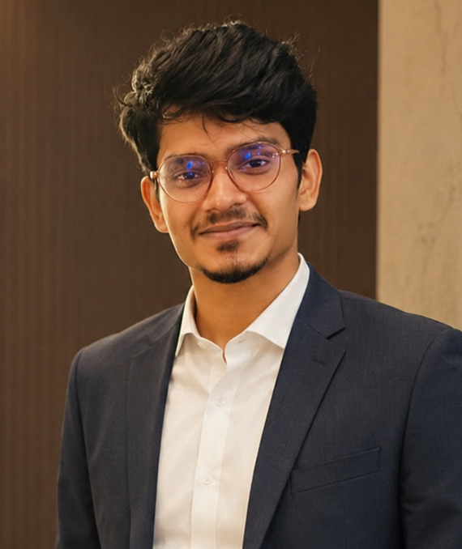

Hi! I am Amal Santhosh Kumar, an Electrical & IT Engineering student at Otto-von-Guericke University, Magdeburg. I am passionate about how connected technologies shape smarter mobility and automation.
Experienced with developing automation solutions, control systems, and data-driven applications. I have professional experience from Accenture in software engineering and SQL-based data optimization. I am fascinated by IoT, AI, and systems that push the boundaries of modern agriculture and robotics.
Get in touch!